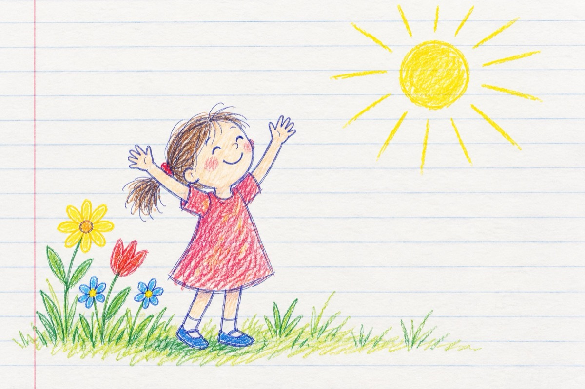

Poezia de azi
Dragi copii, în fiecare zi
Pe care o trăim
Avem o poezie, chiar modul de a fi
Dacă nu știm, e bine să știm!...
În fiecare zi te scoli de dimineață
După o noapte plăcută de vise
Și-ți spui; bine te-am găsit viață
Iar soarelui îi faci din mânuțe!...
În fiecare zi trăită e o poezie
Te scoli, te speli pe dinți, pe față
Totu-n jur e luminos și plin de veselie
Natura cu tot ce are te întâmpină și te răsfață!
Trăiești; bună, bună dimineața!
Și ție grădina cu flori multicoloră, parfumată
Și copilului care pune primii pași în viață o învață
De toate acestea copii, avem cu toții parte
Bună dimineața viață!
Vasile Groza